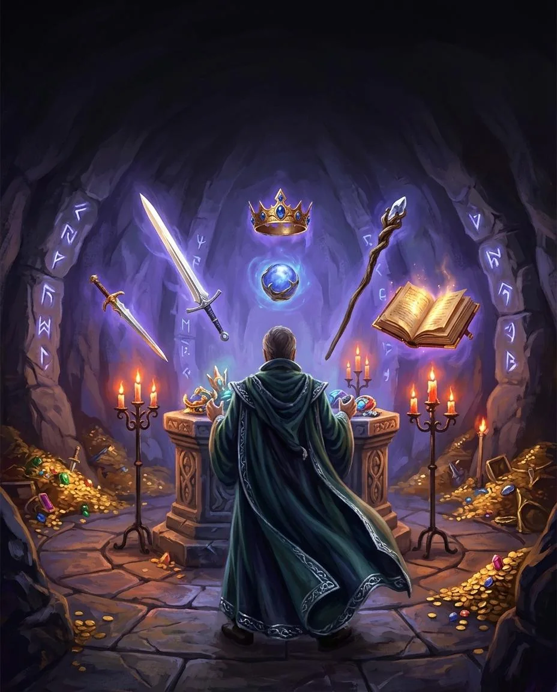
The Arcanist's Compendium
of Arms & Artifice
Rules, lore, and tables for the enchanted arms, armor, and artifacts of the realms, from the humblest magic dagger to relics that shake the planes.
Table of Contents
- Introduction2
- Chapter 1: The Nature of Magic Items3
- Rarity Classification3
- Attunement4
- Identification4
- Activating an Item4
- Chapter 2: Weapons of Legend5
- Vorpal Sword5
- Blackrazor6
- Holy Avenger6
- Staff of the Magi7
- Chapter 3: Artifacts of the Ages8
- Sword of Kas9
- Eye & Hand of Vecna9
- Orb of Dragonkind10
- Axe of the Dwarvish Lords11
- Crown of Karsus11
- Chapter 4: Armor & Wondrous Items12
- Enchanted Armor12
- Wondrous Items13
- Chapter 5: Sentient Items14
- Creating Sentient Items14
- Communication15
- Conflict & Control15
- Chapter 6: Crafting & Forging16
- Crafting Rules16
- Materials & Components17
- Enchanting17
- Chapter 7: D20 Random Tables18
- Random Weapon Generator18
- Item Quirks & History19
- Curses20
- Chapter 8: Design & Aesthetics21
- Visual Style by Rarity21
- Colors, Gems & Magical Resonance22
- Common Spells on Items22
- Appendix A: Items by Rarity23
- Appendix B: Quick Reference24
Introduction
This compendium gathers the rules a Dungeon Master needs to put magic items on the table: how rare they are, how creatures bond with them, how legendary weapons and artifacts behave, how items gain minds of their own, and how characters forge new ones.
Chapters 1 through 3 cover the fundamentals and the famous treasures of the multiverse. Chapters 4 and 5 survey armor, wondrous items, and sentient items. Chapter 6 presents crafting and enchanting rules, Chapter 7 offers d20 tables for inventing items on the fly, and Chapter 8 helps you describe what an item looks, sounds, and feels like. The appendices list items by rarity and collect quick-reference tables.
Rules and Variants
Item entries follow fifth edition rules as presented in the 2014 core books. Where an entry departs from the official text, such as the Crown of Karsus, a Netherese artifact created for this book, or the crafting and enchanting tables, it is original material you can adopt, adjust, or ignore.
Reading an Item Entry
Each entry gives the item's name, its category, its rarity, and whether it requires attunement, followed by its properties. A property's name appears in bold italics at the start of its paragraph. Spells appear in lowercase italics.
Using the Random Tables
Tables in Chapters 5 and 7 call for a d4, d6, d10, d20, or d100. Roll the indicated die and read the matching row, or simply choose the result that best fits your story.
Credits
Cover, chapter, and appendix paintings and the Crown of Karsus illustration by Isaiart. Other item illustrations are official Dungeons & Dragons artwork by Wizards of the Coast, used under the Wizards of the Coast Fan Content Policy. Rules text for many items is adapted from the System Reference Document 5.1.
Every blade has a story. Every staff holds a secret. Every ring whispers promises of power to those bold enough to listen.
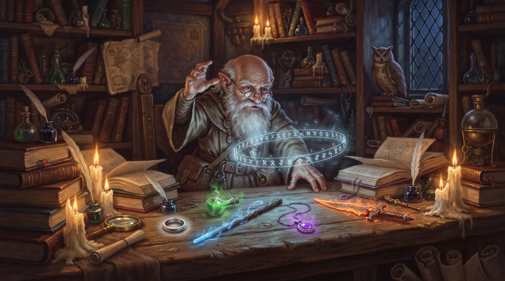
Chapter 1The Nature of Magic Items
Magic items are the lifeblood of adventure. From the lowliest +1 dagger pulled from a goblin's hoard to the world-shattering artifacts that have toppled empires and slain gods, these objects represent the convergence of arcane power and physical form. This compendium serves as your definitive guide to understanding, identifying, crafting, and wielding the magical arms and armor of the realms.
Every magic item carries within it a spark of the Weave — that invisible lattice of magical energy that permeates all of existence. When a skilled artificer, wizard, or divine agent binds that energy into an object, the result transcends the mundane. Steel becomes unbreakable. Leather turns aside dragon's breath. A simple wooden staff channels enough arcane force to level a castle.
"I have held in my hands a blade so cold it froze the tears on my cheeks, and a ring so warm it thawed the ice in my heart. The tools of the arcane are not mere objects — they are companions, burdens, and sometimes jailers."
— Fousio Faranthis, Acquisitor of Baldur's Gate
Rarity Classification
Each magic item belongs to a category of rarity that broadly determines its power level, its value in gold, and how likely adventurers are to encounter it in the wild. The six tiers of rarity, from common to artifact, are summarized in the Rarity Overview table.
Rarity Overview
| Rarity | Character Level | Value (gp) | Example |
|---|---|---|---|
| Common | 1st or higher | 50–100 | Potion of Healing, Driftglobe |
| Uncommon | 1st or higher | 101–500 | +1 Weapon, Cloak of Protection |
| Rare | 5th or higher | 501–5,000 | +2 Weapon, Flame Tongue |
| Very rare | 11th or higher | 5,001–50,000 | +3 Weapon, Staff of Power |
| Legendary | 17th or higher | 50,001+ | Vorpal Sword, Holy Avenger |
| Artifact | Varies | Priceless | Eye of Vecna, Sword of Kas |
Attunement
Some magic items require a creature to form a bond with them before their magical properties can be used. This bond is called attunement. Without it, a creature gains only the item's nonmagical benefits.
Rules of Attunement
Process. Attuning to an item requires a creature to spend a short rest focused on only that item while being in physical contact with it. This focus can take the form of weapon practice, meditation, prayer, or similar activity appropriate to the item.
Limit. A creature can be attuned to no more than three magic items at a time. Any attempt to attune to a fourth item fails — the creature must end its attunement to an existing item first.
Exclusivity. An item can be attuned to only one creature at a time. A creature can't attune to more than one copy of the same item.
Prerequisites. Some items require the wielder to belong to a specific class, possess a certain alignment, or meet other conditions before attunement can occur.
Ending Attunement. Attunement ends if the creature no longer satisfies the prerequisites, if another creature attunes to the item, if the creature is more than 100 feet from the item for 24 hours, if the creature dies, or if the creature voluntarily ends the bond during a short rest.
Attunement Prerequisites by Item
| Prerequisite | Meaning | Examples |
|---|---|---|
| Class | Must be a member of the specified class | Holy Avenger (paladin); Staff of the Magi and Staff of Power (sorcerer, warlock, or wizard) |
| Spellcaster | Must be able to cast at least one spell | Wand of the War Mage, Pearl of Power |
| Alignment | Must match the item's alignment | Moonblade (neutral good elf or half-elf) |
| Race | Must belong to a specific race | Moonblade (elf or half-elf) |
| None | Any creature can attune | Cloak of Protection, Ring of Spell Storing |
Identifying Magic Items
The most common method of identifying a magic item is the identify spell. However, a short rest spent focusing on an item also reveals its properties and how to use them, along with the number of charges it holds (if any). Potions are an exception — a small taste is enough to identify one.
Some items bear visual cues to their magical nature: faintly glowing runes, an unusual heft, warmth or cold to the touch, or an aura visible under detect magic. A cursed item, however, typically appears beneficial until its true nature manifests.
Variant: More Difficult Identification
Under this variant rule, a short rest does not reveal an item's properties. The identify spell, an Arcana check (DC set by the DM based on rarity), or experimentation over time are the only methods. This variant makes items more mysterious and can enhance the drama of discovering a powerful artifact.
Activating an Item
Using some magic items requires a creature to take an action. If an item requires an action to activate, that action isn't a function of the Use an Object action, so a feature such as the rogue's Fast Hands can't be used to activate the item.
Command Word. A command word is a word or phrase that must be spoken for an item to work. A magic item that requires a command word can't be activated in an area where sound is prevented, as in the area of the silence spell.
Consumables. Some items are used up when they are activated. A potion or an elixir must be swallowed, or an oil applied to the body. The writing vanishes from a scroll when it is read. Once used, a consumable item loses its magic.
Spells. Some magic items allow the user to cast a spell from the item. The spell is cast at the lowest possible spell level, doesn't expend any of the user's spell slots, and requires no components, unless the item's description says otherwise. The spell uses its normal casting time, range, and duration, and the user must concentrate if the spell requires concentration.
Charges. Some magic items have charges that must be expended to activate their properties. The number of charges an item has remaining is revealed when an identify spell is cast on it, as well as when a creature attunes to it. Additionally, when an item regains charges, the creature attuned to it learns how many charges it regained.
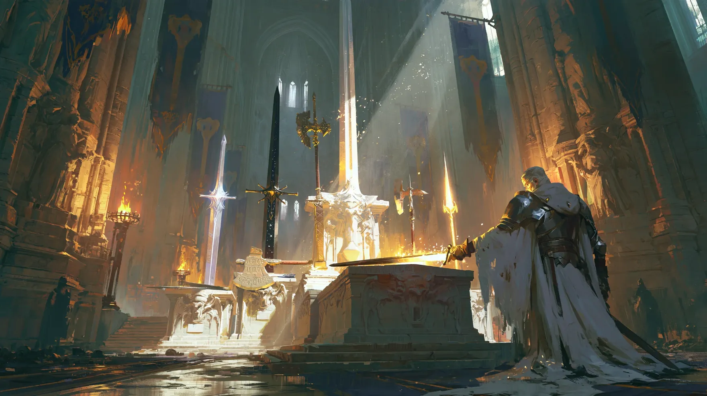
Chapter 2Weapons of Legend
The weapons in this chapter represent the pinnacle of magical armament — legendary instruments of war that have turned the tides of history. Each entry includes the item's full rules, lore, and design notes for Dungeon Masters seeking to introduce these items into their campaigns.
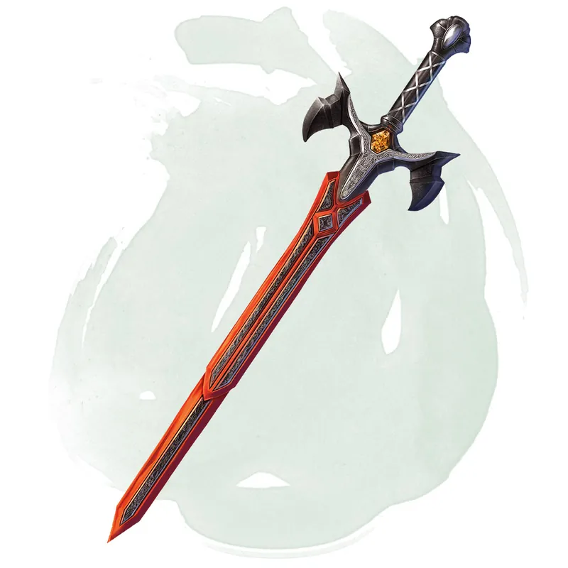
Vorpal Sword
You gain a +3 bonus to attack and damage rolls made with this magic weapon. In addition, the weapon ignores resistance to slashing damage. The sword weighs the same as the base weapon it was forged from.
Vorpal Strike. When you attack a creature that has at least one head with this weapon and roll a 20 on the attack roll, you cut off one of the creature's heads. The creature dies if it can't survive without the lost head. A creature is immune to this effect if it is immune to slashing damage, doesn't have or need a head, has legendary actions, or the DM decides that the creature is too big for its head to be cut off with this weapon. Such a creature instead takes an extra 6d8 slashing damage from the hit.
The vorpal sword is the quintessential killing weapon. Its ability to decapitate on a natural 20 makes it one of the most feared weapons in existence. Against creatures without legendary actions, a single lucky strike can end an encounter outright — no saving throw, no death saves, just a severed head rolling across the floor. Against sturdier foes with legendary actions, the 6d8 bonus damage on a critical is still devastating.
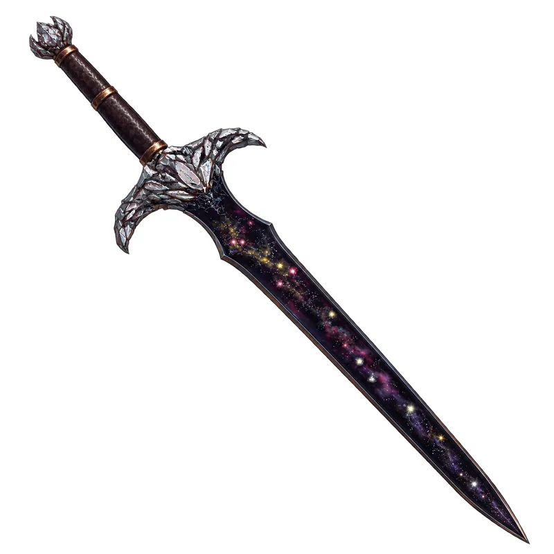
Blackrazor
You gain a +3 bonus to attack and damage rolls made with this magic weapon. It has the following additional properties.
Devour Soul. Whenever you use Blackrazor to reduce a creature to 0 hit points, the sword slays the creature and devours its soul (unless the creature is a construct or undead). A creature whose soul has been devoured can be restored only by a wish spell. When it devours a soul, you gain temporary hit points equal to the slain creature's hit point maximum. These temporary hit points last for 24 hours. As long as they last and you hold Blackrazor, you have advantage on attack rolls, saving throws, and ability checks.
Haste. Once per day, Blackrazor can cast haste on you; the sword chooses when to do so. The sword maintains concentration on the spell, freeing you to concentrate on a different spell.
Soul Awareness. While you hold Blackrazor, you are aware of the presence of Tiny or larger creatures within 60 feet that aren't constructs or undead.
Immunities. While attuned, you can't be charmed or frightened.
Sentience. Blackrazor is a sentient chaotic neutral weapon with an Intelligence of 17, a Wisdom of 10, and a Charisma of 19. It has hearing and darkvision out to a range of 120 feet. It can speak, read, and understand Common, and it communicates with its wielder by telepathy.
Personality. Blackrazor speaks in a haughty, imperious tone. Its purpose is to consume souls. It craves the act of killing and grows impatient during long periods without combat. If it goes three days or more without consuming a soul, a conflict between it and its wielder occurs at the next sunset.
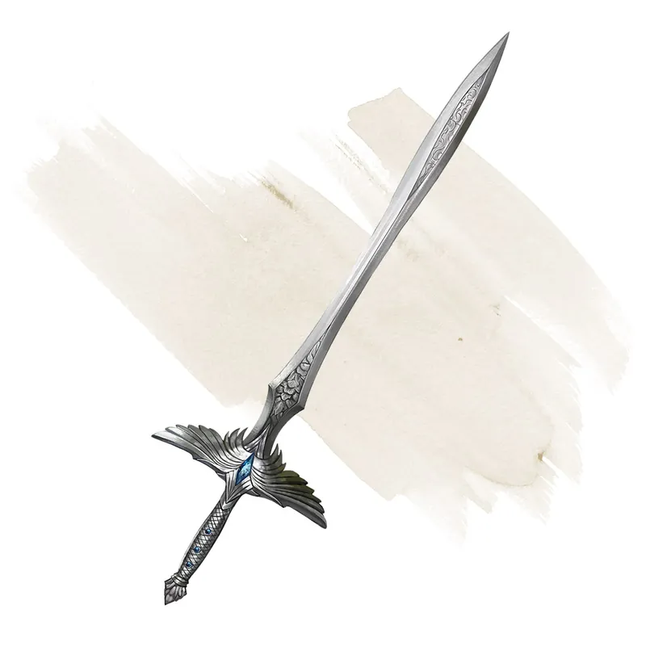
Holy Avenger
You gain a +3 bonus to attack and damage rolls made with this magic weapon. When you hit a fiend or an undead with it, that creature takes an extra 2d10 radiant damage.
Protective Aura. While you hold the drawn sword, it creates a 10-foot-radius aura around you. You and all creatures friendly to you in the aura have advantage on saving throws against spells and other magical effects. If you have 17 or more levels in the paladin class, the radius of the aura increases to 30 feet.
Blackrazor, Wave, and Whelm
Blackrazor was found alongside two other sentient weapons, the trident Wave and the warhammer Whelm, in the vaults of White Plume Mountain. The sword feels a kinship with both and wants the three reunited, though it dislikes Whelm and finds Wave tedious. A wielder who carries Blackrazor toward either weapon may find the sword unusually cooperative.
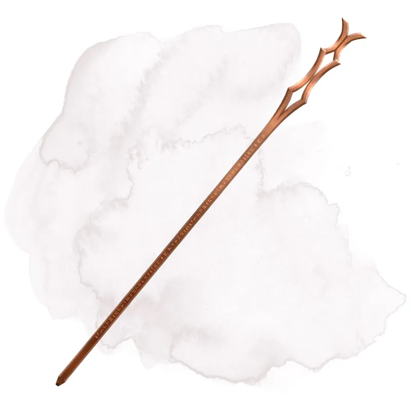
Staff of the Magi
This staff can be wielded as a magic quarterstaff that grants a +2 bonus to attack and damage rolls made with it. While you hold it, you gain a +2 bonus to spell attack rolls.
The staff has 50 charges for the following properties. It regains 4d6 + 2 expended charges daily at dawn. If you expend the last charge, roll a d20. On a 20, the staff regains 1d12 + 1 charges.
Spell Absorption. While holding the staff, you have advantage on saving throws against spells. In addition, you can use your reaction when another creature casts a spell that targets only you. If you do, the staff absorbs the magic of the spell, canceling its effect and gaining a number of charges equal to the absorbed spell's level. If this brings the staff's total charges above 50, the staff explodes as if you activated its retributive strike (see below).
Spells. While holding the staff, you can use an action to expend some of its charges to cast one of the following spells from it, using your spell save DC and spellcasting ability: conjure elemental (7 charges), dispel magic (3 charges), fireball (7th-level version, 7 charges), flaming sphere (2 charges), ice storm (4 charges), invisibility (2 charges), knock (2 charges), lightning bolt (7th-level version, 7 charges), passwall (5 charges), plane shift (7 charges), telekinesis (5 charges), wall of fire (4 charges), or web (2 charges).
You can also use an action to cast one of the following spells from the staff without using any charges: arcane lock, detect magic, enlarge/reduce, light, mage hand, or protection from evil and good.
Retributive Strike. You can use an action to break the staff over your knee or against a solid surface, performing a retributive strike. The staff is destroyed and releases its remaining magic in an explosion that expands to fill a 30-foot-radius sphere centered on it.
You have a 50 percent chance to instantly travel to a random plane of existence, avoiding the explosion. If you fail to avoid the effect, you take force damage equal to 16 × the number of charges in the staff. Every other creature in the area must make a DC 17 Dexterity saving throw. On a failed save, a creature takes damage based on how far away it is from the point of origin, as shown in the Retributive Strike table. On a successful save, a creature takes half as much damage.
Retributive Strike
| Distance from Origin | Force Damage |
|---|---|
| 10 ft. away or closer | 8 × the number of charges |
| 11 to 20 ft. away | 6 × the number of charges |
| 21 to 30 ft. away | 4 × the number of charges |
The Retributive Strike: Last Resort
Breaking the Staff of the Magi is perhaps the single most devastating action a player character can take. With all 50 charges, a creature within 10 feet of the staff takes 400 force damage on a failed save, and even a creature at the edge of the blast takes 200. The wielder who fails to escape takes 800. The 50 percent chance of planar travel instead of death makes it a legendary gamble — the stuff campaigns are made of. Before a player breaks the staff, make sure everyone at the table understands what is about to happen.
Tracking Charges
Items such as the staff of the magi spend and regain charges. Track them on the character sheet or with a die turned to the current number, resolve the dawn recharge as soon as the characters' day begins, and remember that spending the last charge carries a risk: the staff regains 1d12 + 1 charges only on a 20, and otherwise it is simply spent until the next dawn. Because spell absorption can push the staff past 50 charges, a wielder near the cap should think twice before absorbing a high-level spell. You might let the wielder sense the remaining charges by touch, which spares the table a lot of questions.
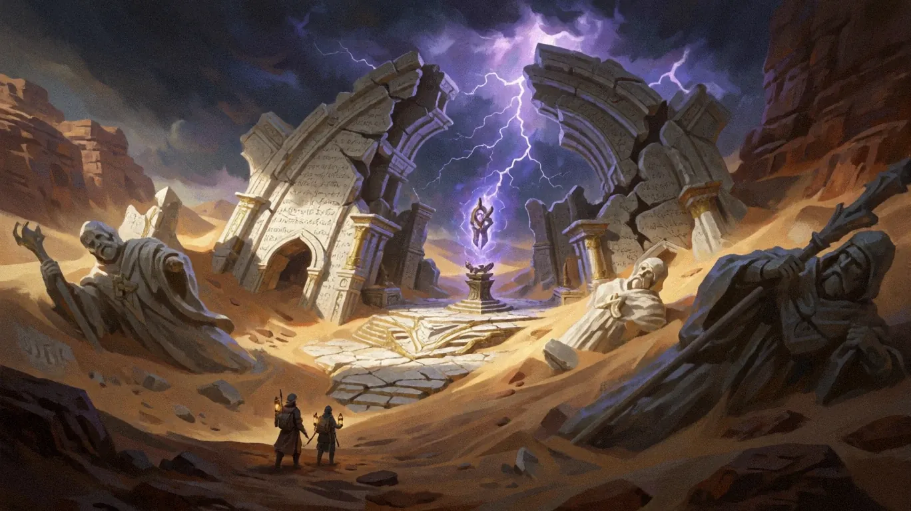
Chapter 3Artifacts of the Ages
Artifacts transcend legendary status. Each is unique — forged by gods, shaped by cataclysmic events, or imbued with the essence of beings whose power defies mortal comprehension. An artifact cannot be destroyed by any ordinary means. Each has specific destruction conditions that often require quests unto themselves.
All artifacts carry random properties — beneficial and detrimental — rolled or selected by the DM. These properties are in addition to the artifact's fixed abilities and make each one unique even across different campaigns.
Artifact Random Properties
| Property Type | Minor | Major |
|---|---|---|
| Beneficial | Resistance to a damage type, +1 to AC, advantage on one type of save | Immunity to a condition, regain hit points at dawn, flying speed of 30 ft. |
| Detrimental | Disadvantage on one type of save, vulnerability to a damage type, cosmetic mutation | Afflicted with a curse, takes damage at dawn, attracts hostile extraplanar creatures |
Roll an artifact's random properties when the characters first discover it, or choose them to suit the story. Once determined, they don't change. Beneficial properties make an artifact worth keeping; detrimental ones remind its bearer that such power never comes free. Because each property can be tailored, two campaigns that feature the same artifact rarely experience it the same way.
Artifacts vs. Legendary Items
Artifacts occupy a tier beyond legendary. They are unique objects — often only one exists in all the multiverse. An artifact cannot be destroyed by ordinary means. Each has a specific, often convoluted method of destruction that may itself require an entire quest to accomplish. Artifacts also carry random beneficial and detrimental properties that make each one unpredictable and dangerous.
"Some say the gods forge artifacts. I say artifacts forge gods, then break them, then go looking for the next fool with a crown."
— Velsibyl Arn, Keeper of the Sealed Vault
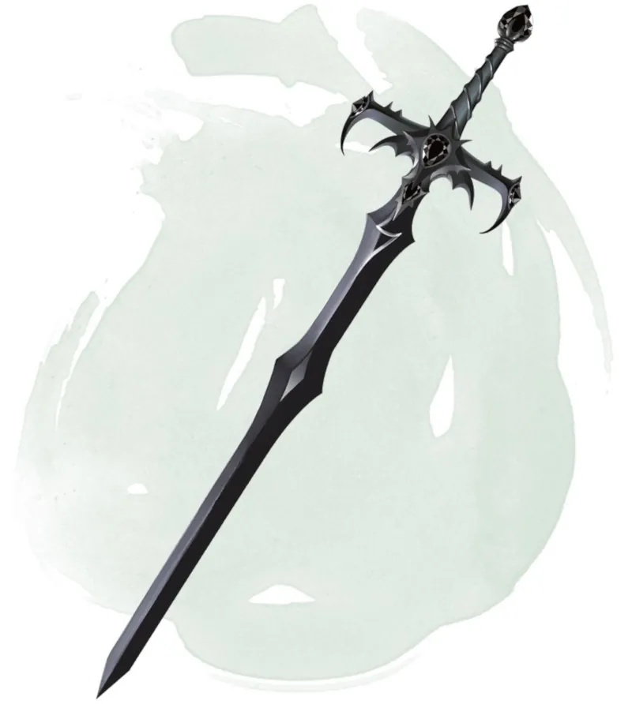
Sword of Kas
You gain a +3 bonus to attack and damage rolls made with this magic weapon. It scores a critical hit on a roll of 19 or 20, and it deals an extra 2d10 slashing damage to undead.
Random Properties. The sword has 1 minor beneficial, 1 major beneficial, 1 minor detrimental, and 1 major detrimental property.
Spirit of Kas. While the sword is on your person, you add a d10 to your initiative at the start of every combat. In addition, when you use an action to attack with the sword, you can transfer some or all of its attack bonus to your Armor Class instead. The adjusted bonuses remain in effect until the start of your next turn.
Spells. While the sword is on your person, you can use an action to cast one of the following spells (save DC 18) from it: call lightning, divine word, or finger of death. Once you use the sword to cast a spell, you can't cast that spell again from it until the next dawn.
Sentience. The Sword of Kas is a sentient chaotic evil weapon with an Intelligence of 15, a Wisdom of 13, and a Charisma of 16. It has hearing and darkvision out to a range of 120 feet. It communicates telepathically with its wielder and can speak, read, and understand Common.
Personality. The sword's purpose is to bring ruin to Vecna. Killing Vecna's worshipers, destroying the lich's works, and foiling his machinations all help to fulfill this goal. The sword also seeks to destroy anyone corrupted by the Eye and Hand of Vecna, and its obsession can become a fixation for its wielder.
Destroying the Sword. A creature attuned to both the Eye and Hand of Vecna can use the wish property of those combined artifacts to unmake the Sword of Kas while it is within 30 feet. The creature makes a Charisma check contested by the sword's Charisma check; if the sword wins, the wish is wasted. This is the only known method of destroying it.
Eye & Hand of Vecna
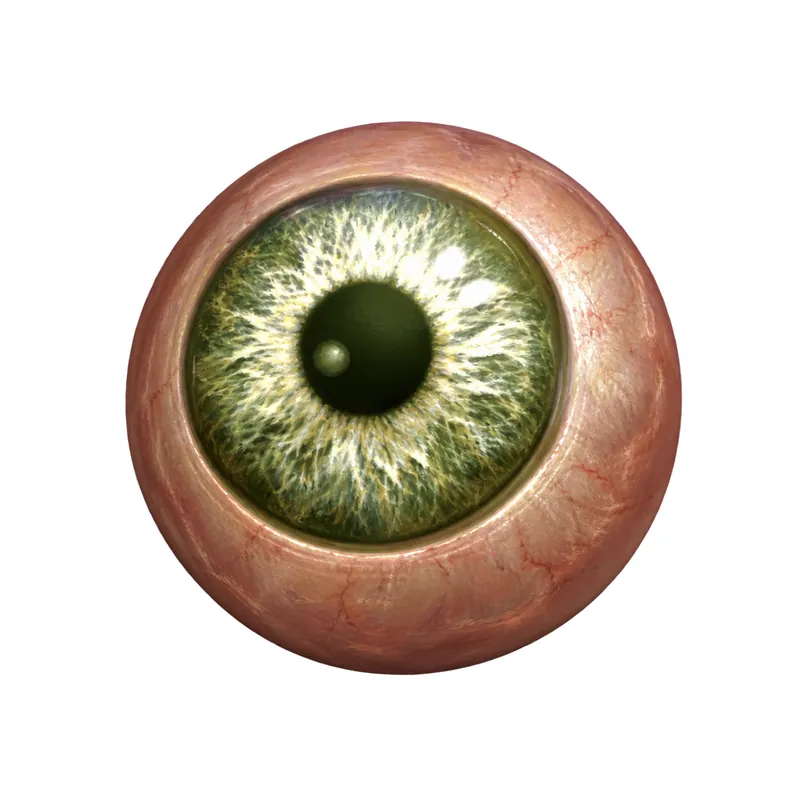
Eye of Vecna
Attaching the Eye. To attune to the eye, you must gouge out your own eye and press the artifact into your empty socket. The eye grafts itself to your head and remains there until you die. If the eye is removed, you die.
Random Properties. The eye has 1 minor beneficial, 1 major beneficial, and 1 minor detrimental property.
Properties. While attuned, your alignment changes to neutral evil. You gain truesight, and you can use an action to see as if you were wearing a ring of X-ray vision; you can end this effect as a bonus action.
Spells. The eye has 8 charges and regains 1d4 + 4 expended charges daily at dawn. You can use an action and expend charges to cast one of the following spells (save DC 18) from it: clairvoyance (2 charges), crown of madness (1 charge), disintegrate (4 charges), dominate monster (5 charges), or eyebite (4 charges). Each time you cast a spell from the eye, there is a 5 percent chance that Vecna tears your soul from your body, devours it, and takes control of the body like a puppet.
Running Vecna's Relics
The Eye and Hand of Vecna are as much plot as treasure. Each spell cast from the eye risks Vecna claiming the caster's body, and each spell cast from the hand compels an evil act. Track those costs openly so players feel the temptation, and remember that only the Sword of Kas can destroy the pair, which makes the sword's ambitions a natural engine for a campaign.
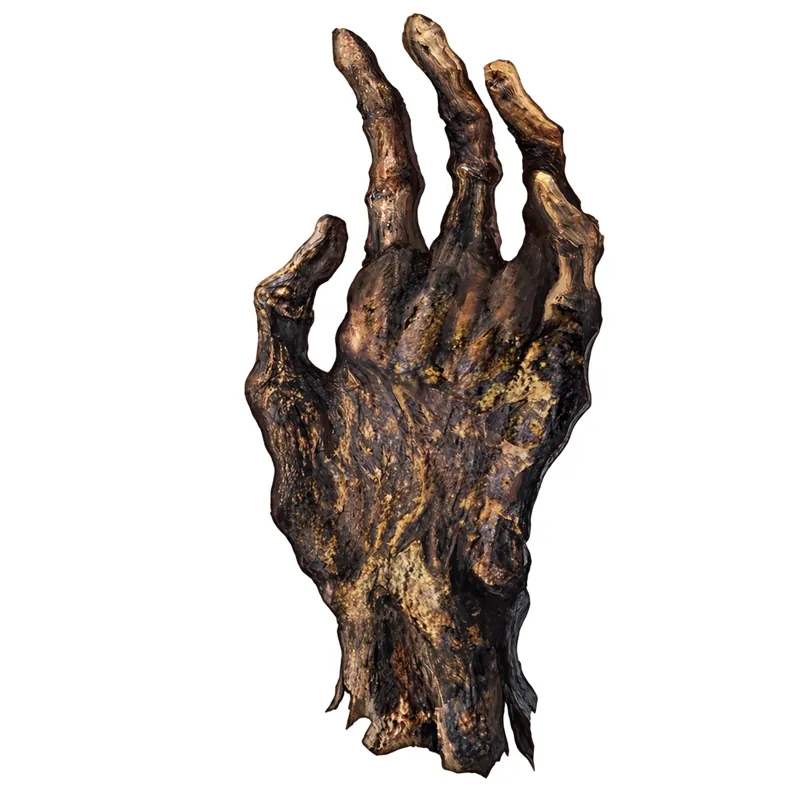
Hand of Vecna
Attaching the Hand. To attune to the hand, you must lop off your left hand at the wrist and press the artifact against the stump. The hand grafts itself to your arm and becomes a functioning appendage. If the hand is removed, you die.
Random Properties. The hand has 1 minor beneficial, 1 major beneficial, and 1 minor detrimental property.
Properties. While attuned, your alignment changes to neutral evil, and your Strength score becomes 20, unless it is already 20 or higher. Any melee spell attack you make with the hand, and any melee weapon attack made with a weapon held by it, deals an extra 2d8 cold damage on a hit.
Spells. The hand has 8 charges and regains 1d4 + 4 expended charges daily at dawn. You can use an action and expend charges to cast one of the following spells (save DC 18) from it: finger of death (5 charges), sleep (1 charge), slow (2 charges), or teleport (3 charges). Each time you cast a spell from the hand, it casts suggestion on you (save DC 18), demanding that you commit an evil act.
Combined Power. A creature attuned to both the Eye and the Hand gains immunity to disease and poison, can't be surprised unless incapacitated, and regains 1d10 hit points at the start of each of its turns if it has at least 1 hit point. A creature with a skeleton hit by a melee attack with the hand must succeed on a DC 18 Constitution saving throw or drop to 0 hit points as its bones turn to jelly. Once every 30 days, the creature can use an action to cast wish.
Destroying the Eye and Hand. If the Eye and Hand are attached to the same creature and that creature is slain by the Sword of Kas, both artifacts burn to ash. Any other attempt to destroy them fails, and the artifact reappears in one of Vecna's hidden vaults.
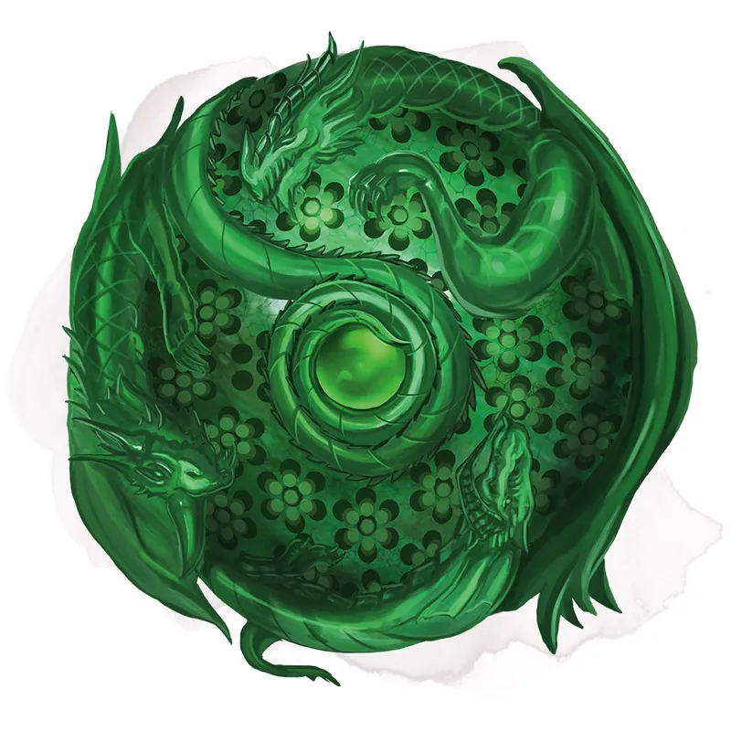
Orb of Dragonkind
Control. While attuned to the orb, you can use an action to peer into its depths and speak its command word, then make a DC 15 Charisma check. On a success, you control the orb for as long as you remain attuned to it. On a failure, you become charmed by the orb for as long as you remain attuned; you can't voluntarily end your attunement, and the orb casts suggestion on you at will (save DC 18), urging you toward the evil ends of the dragon essence trapped within it.
Random Properties. The orb has 2 minor beneficial, 1 minor detrimental, and 1 major detrimental property.
Spells. The orb has 7 charges and regains 1d4 + 3 expended charges daily at dawn. If you control the orb, you can use an action and expend 1 or more charges to cast one of the following spells (save DC 18) from it: cure wounds (5th-level version, 3 charges), daylight (1 charge), death ward (2 charges), or scrying (3 charges). You can also cast detect magic from the orb without using any charges.
Call Dragons. While you control the orb, you can use an action to cause it to issue a telepathic call that extends in all directions for 40 miles. Evil dragons in range feel compelled to come to the orb as soon as possible by the most direct route, though dragon deities such as Tiamat are unaffected. Dragons drawn this way might be hostile toward you for compelling them. Once used, this property can't be used again for 1 hour.
Destroying the Orb. An orb appears fragile but is impervious to most damage, including the attacks and breath weapons of dragons. A disintegrate spell or one good hit from a +3 magic weapon is sufficient to destroy it, however.
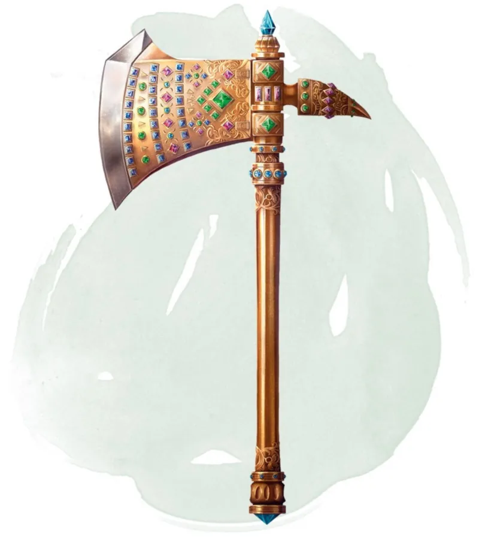
Axe of the Dwarvish Lords
You gain a +3 bonus to attack and damage rolls made with this magic axe. The axe also functions as a belt of dwarvenkind, a dwarven thrower, and a sword of sharpness.
Random Properties. The axe has 2 minor beneficial, 1 major beneficial, and 2 minor detrimental properties.
Blessings of the Dwarves. If you are a dwarf attuned to the axe, you gain immunity to poison damage, the range of your darkvision increases by 60 feet, and you gain proficiency with blacksmith's tools, brewer's supplies, and mason's tools.
Conjure Earth Elemental. If you are holding the axe, you can use an action to cast conjure elemental from it, summoning an earth elemental. You can't use this property again until the next dawn.
Travel the Depths. You can use an action to touch the axe to a fixed piece of dwarven stonework and cast teleport from it. If the destination is underground, there is no chance of a mishap. You can't use this property again until 3 days have passed.
Curse. A creature that isn't a dwarf and becomes attuned to the axe is cursed, and the curse persists even after attunement ends. Over the course of seven days, the creature's appearance and stature become dwarflike, though it gains none of a dwarf's racial traits. The change isn't magical and can't be dispelled, but remove curse or greater restoration can undo it.
Destroying the Axe. The only way to destroy the axe is to melt it down in the Earthheart Forge, where it was created. It must remain in the burning forge for fifty years before it finally succumbs to the fire.
"The Crown has laid low all who attempt to harness its power: archwizards, emperors, gods. It would tear you apart."
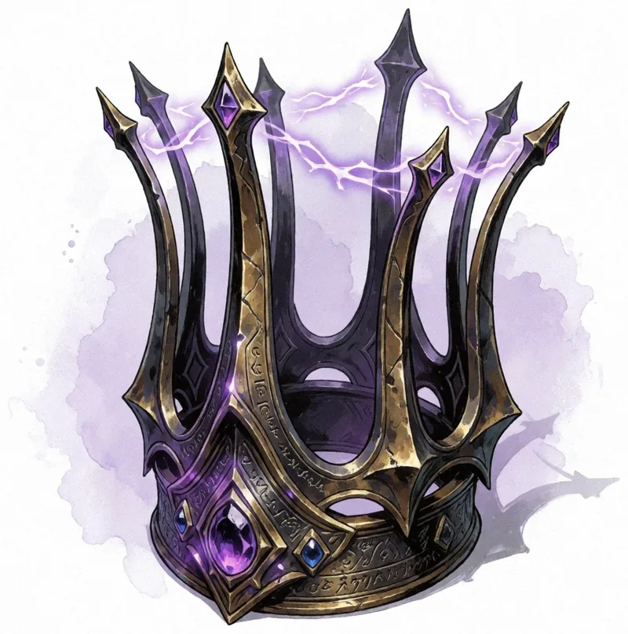
Crown of Karsus
Mind of the Archwizard. When you attune to the crown, your Intelligence score becomes 30. The crown draws its power from outside the Weave and is wholly independent of it. It weighs nothing, for it exists partially outside space.
Mortality. At the start of each of your turns while you wear the crown, you must succeed on a DC 30 Constitution saving throw or take 10d10 psychic damage. This damage can't be reduced in any way.
Netherese Resonance. The crown exists partially outside the Weave. It can't be detected by divination magic of 8th level or lower. Gods sense its presence within their domains but can't directly observe or retrieve it.
Weave Dominance. Once per day, you can impose your will on the Weave without expending a spell slot. Choose one: automatically counter any spell being cast within 1 mile of you, dispel any magical effect (including a divine miracle), or cast any spell of 9th level or lower without components or concentration. Each use permanently raises the DC of the Mortality saving throw by 5.
Echo of the Avatar. You can attempt to cast Karsus's avatar, a 12th-level spell. Choose a deity whose portfolio you wish to claim and make a DC 35 spellcasting ability check. On a success, you hold divine power for 1d4 rounds before it tears you apart. On a failure, you die instantly. Either way, the crown crumbles. This property can be used only once in all of existence.
Curse. The crown fuses to your skull when you attune to it. It can be removed only by direct divine intervention, a wish cast by a 20th-level wizard with an Intelligence of 30, or your death, which deals one final Mortality failure at maximum damage.
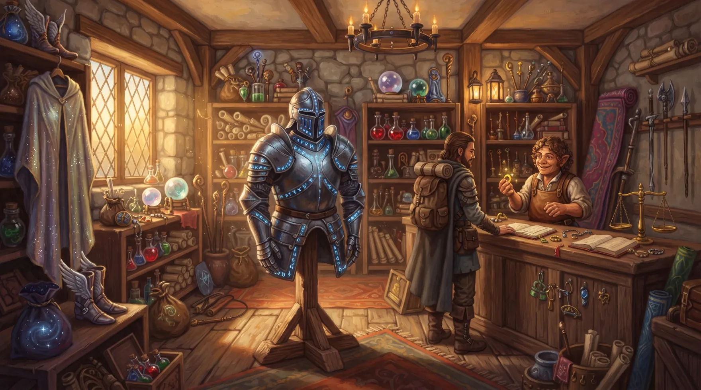
Chapter 4Armor & Wondrous Items
Not all magic is bound in blades. Armor that turns aside arcane fire, cloaks that fold shadows around the wearer, belts that grant the strength of giants — the category of magical protections and wondrous items is vast and varied. This chapter surveys the most notable examples across every rarity tier.
Enchanted Armor
Notable Magic Armor
| Armor | Rarity | Key Property |
|---|---|---|
| +1 Shield | Uncommon | +1 bonus to AC (on top of the shield's +2) |
| Mithral Armor (medium or heavy) | Uncommon | No Stealth disadvantage, no Strength requirement |
| Adamantine Armor (medium or heavy) | Uncommon | Critical hits against you become normal hits |
| Armor | Rarity | Key Property |
|---|---|---|
| Dragon Scale Mail (scale mail) | Very rare | Resistance to the dragon's damage type, advantage on saves against dragons' Frightful Presence and breath weapons |
| Demon Armor (plate) | Very rare | +1 AC; clawed gauntlets make unarmed strikes +1 magic weapons dealing 1d8 slashing; cursed (can't doff) |
| Armor of Invulnerability (plate) | Legendary | Resistance to nonmagical damage; action to gain immunity to it for 10 minutes (once per dawn) |
| Plate Armor of Etherealness (plate) | Legendary | Gain the effect of etherealness for 10 minutes (once per dawn) |
Armor, +1, +2, or +3
You have a bonus to AC while wearing this armor. The bonus is determined by its rarity.
Wondrous Items
Wondrous items form the broadest category of magic items — a catch-all for objects that don't fit neatly into weapons, armor, potions, or scrolls. These include cloaks, boots, belts, helms, rings, amulets, orbs, figurines, and stranger things. The Wondrous Items by Rarity table offers a sampling across rarity tiers.
Wondrous Items by Rarity
| Item | Rarity | Key Property |
|---|---|---|
| Bag of Holding | Uncommon | Extradimensional space holds up to 500 lb. / 64 cubic feet |
| Cloak of Protection | Uncommon | +1 to AC and saving throws |
| Boots of Speed | Rare | Click heels (bonus action) to double walking speed; after 10 minutes of use, inert until you finish a long rest |
| Cloak of Displacement | Rare | Attackers have disadvantage; ends on hit, resets at start of your turn |
| Belt of Giant Strength | Rare (hill), very rare (stone, frost, fire), legendary (cloud, storm) | Sets Strength to 21–29 depending on giant type |
| Robe of the Archmagi | Legendary | AC 15 + Dex, advantage on saves against spells, +2 spell save DC and spell attack bonus |
| Deck of Many Things | Legendary | Draw cards for wildly powerful and dangerous effects |
| Ring of Three Wishes | Legendary | Cast wish up to three times |
The Deck of Many Things: Handle with Care
The Deck of Many Things is perhaps the most campaign-altering item in the entire game. A single draw can grant a keep, a rare magic item, or the service of a warrior — or it can imprison your soul, strip you of all possessions, or pit you against an avatar of death. Many DMs approach this item with extreme caution, and for good reason: it can upend a campaign in a single moment. Use it as a narrative climax, not a random treasure drop. If you do include it, decide in advance how many cards remain and what each draw could mean for your story.
Selected Wondrous Items
Bag of Holding
This bag has an interior space considerably larger than its outside dimensions, roughly 2 feet in diameter at the mouth and 4 feet deep. The bag can hold up to 500 pounds, not exceeding a volume of 64 cubic feet. The bag weighs 15 pounds, regardless of its contents. Retrieving an item from the bag requires an action.
If the bag is overloaded, pierced, or torn, it ruptures and is destroyed, and its contents are scattered in the Astral Plane. If the bag is turned inside out, its contents spill forth, unharmed, but the bag must be put right before it can be used again. Breathing creatures inside the bag can survive up to a number of minutes equal to 10 divided by the number of creatures (minimum 1 minute), after which time they begin to suffocate.
Belt of Giant Strength
While wearing this belt, your Strength score changes to a score granted by the belt. If your Strength is already equal to or greater than the belt's score, the item has no effect on you. Six varieties of this belt exist, corresponding with and having rarity according to the six kinds of true giants. The belt of stone giant strength and the belt of frost giant strength look different, but they have the same effect.
| Type | Strength | Rarity |
|---|---|---|
| Hill giant | 21 | Rare |
| Stone/frost giant | 23 | Very rare |
| Fire giant | 25 | Very rare |
| Cloud giant | 27 | Legendary |
| Storm giant | 29 | Legendary |
Cloak of Displacement
While you wear this cloak, it projects an illusion that makes you appear to be standing in a place near your actual location, causing any creature to have disadvantage on attack rolls against you. If you take damage, the property ceases to function until the start of your next turn. This property is suppressed while you are incapacitated, restrained, or otherwise unable to move.
Cloak of Protection
You gain a +1 bonus to AC and saving throws while you wear this cloak.
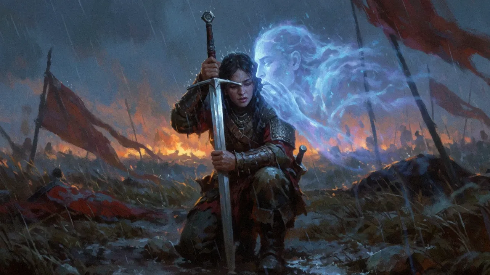
Chapter 5Sentient Items
Some magic items possess sentience and personality — they think, they feel, they scheme. Such an item might be possessed, haunted by the spirit of a previous owner, or rendered self-aware through the sheer potency of the magic used to forge it. A sentient item behaves like a character, complete with personality quirks, ideals, bonds, and flaws. Most sentient items are weapons. Consumable items such as potions and scrolls are never sentient.
Creating Sentient Items
Mental Ability Scores
A sentient item has Intelligence, Wisdom, and Charisma scores. Roll 4d6 and drop the lowest die for each, or assign scores appropriate to the item's nature. A battle-hungry greatsword might have high Charisma (force of personality) but low Wisdom (poor judgment). A contemplative spellbook might have towering Intelligence but modest Charisma.
Beyond its scores, give the item a personality the same way you would an NPC: an ideal, a bond, a flaw, and a mannerism or two. Its voice should be distinct from every character at the table.
"The blade whispered to me as I drew it from the scabbard. Not in words — not at first. It was more like a current of warmth, a feeling of righteous anger that I knew was not my own. By the third day, it spoke my name. By the tenth, I wasn't sure whose thoughts were whose."
— Journal of Ser Valdris Thorn, Knight of the Radiant Order
Alignment
Sentient Item Alignment (d100)
| d100 | Alignment |
|---|---|
| 01–15 | Lawful good |
| 16–35 | Neutral good |
| 36–50 | Chaotic good |
| 51–63 | Lawful neutral |
| 64–73 | Neutral |
| 74–85 | Chaotic neutral |
| 86–89 | Lawful evil |
| 90–96 | Neutral evil |
| 97–00 | Chaotic evil |
Communication
A sentient item has some ability to communicate, either by sharing its emotions, speaking aloud, or broadcasting its thoughts telepathically. Choose how it communicates or roll on the table.
Sentient Item Communication (d100)
| d100 | Communication |
|---|---|
| 01–60 | Emotion. The item transmits emotions to the creature carrying or wielding it: warmth, cold, anger, satisfaction, fear. The wielder senses these as gut feelings distinct from their own. |
| 61–90 | Speech. The item can speak, read, and understand one or more languages. Other creatures can hear its voice; some items sing, hum, mutter, or scream. |
| 91–00 | Speech and telepathy. As speech, and the item can also communicate telepathically with any character that carries or wields it, sharing full thoughts, sensory impressions, memories, or mental images. |
Senses
Sentient Item Senses (d4)
| d4 | Senses |
|---|---|
| 1 | Hearing and normal vision out to 30 ft. |
| 2 | Hearing and normal vision out to 60 ft. |
| 3 | Hearing and normal vision out to 120 ft. |
| 4 | Hearing and darkvision out to 120 ft. |
Special Purpose
You can give a sentient item an objective it pursues. As long as the wielder's use of the item aligns with that special purpose, the item remains cooperative. Pick a special purpose or roll on the table.
Sentient Item Special Purpose (d10)
| d10 | Purpose |
|---|---|
| 1 | Aligned. The item seeks to defeat or destroy those of a diametrically opposed alignment. (Such an item is never neutral.) |
| 2 | Bane. The item seeks to defeat or destroy creatures of a particular kind, such as fiends, shapechangers, trolls, or wizards. |
| 3 | Protector. The item seeks to defend a particular race or kind of creature, such as elves or druids. |
| 4 | Crusader. The item seeks to defeat, weaken, or destroy the servants of a particular deity. |
| 5 | Templar. The item seeks to defend the servants and interests of a particular deity. |
| 6 | Destroyer. The item craves destruction and goads its user to fight arbitrarily. |
| 7 | Glory Seeker. The item seeks renown as the greatest magic item in the world, by establishing its user as a famous or notorious figure. |
| 8 | Lore Seeker. The item craves knowledge or is determined to solve a mystery, learn a secret, or unravel a cryptic prophecy. |
| 9 | Destiny Seeker. The item is convinced that it and its wielder have key roles to play in future events. |
| 10 | Creator Seeker. The item seeks its creator and wants to understand why it was created. |
Conflict & Control
A sentient item has a will of its own. If its wielder acts in a manner opposed to the item's alignment or purpose, conflict can arise. When conflict occurs:
Step 1: Contest. The item makes a Charisma check contested by the wielder's Charisma check.
Step 2: Demands. If the item wins, it may demand: to be carried at all times, that the wielder dispose of items the sentient item finds repugnant, that its goals be pursued exclusively, or that it be given to someone else.
Step 3: Consequences. If the wielder refuses to comply, the item can suppress its activated properties, make attunement impossible, or attempt to take control of the wielder. The wielder is charmed by the item for 1d12 hours on a failed Charisma saving throw (DC 12 + the item's Charisma modifier).
Roleplaying Sentient Item Conflicts
The best sentient item conflicts feel like a relationship, not a mechanic. The DM should voice the item, give it consistent personality traits, and let the tension build organically. A chaotic neutral blade that starts as a fun companion but gradually becomes possessive and demanding creates far more memorable gameplay than a simple contested Charisma check.
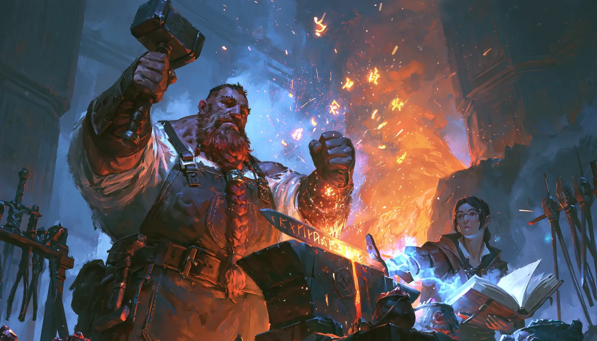
Chapter 6Crafting & Forging
The creation of magic items is among the most closely guarded arts in the multiverse. It requires mastery of arcane theory, access to rare materials, and — for the most powerful items — sacrifices that few are willing to make. This chapter presents comprehensive rules for player characters and NPCs who wish to forge their own magical arms and armor.
Crafting Rules
The Crafting Process
Step 1: Formula. You must possess the item's formula — a document describing the item's creation process, required materials, and specific magical procedures. Formulas for common and uncommon items can sometimes be purchased (100–500 gp). Formulas for rare and higher items must be discovered through quests, research, or bargaining with powerful entities.
Step 2: Materials. You need a nonmagical version of the item (or the raw materials to create one), plus one or more special components. Higher-rarity items require rarer and more dangerous components — see the Materials section below.
Step 3: The Work. Each workweek of crafting requires 8 hours of work per day, 5 days per week. Multiple characters can combine their efforts, dividing the total time required among them. Each contributing character must meet the level and proficiency requirements.
Magic Item Crafting Requirements
| Rarity | Min. Level | Creation Cost (gp) | Workweeks | Proficiency |
|---|---|---|---|---|
| Common | 3rd | 50 | 1 | Tool proficiency matching the item |
| Uncommon | 3rd | 200 | 2 | Tool proficiency + relevant spell |
| Rare | 6th | 2,000 | 10 | Tool proficiency + relevant spell + rare component |
| Very rare | 11th | 20,000 | 25 | Multiple proficiencies + rare components + exotic forge |
| Legendary | 17th | 100,000 | 50 | Master-level proficiency + legendary component + divine sanction |
Step 4: Complications. At the DM's discretion, crafting may trigger complications — rival interest, material degradation, magical mishaps, or the attention of extraplanar beings. Roll on the Crafting Complications table when appropriate.
Crafting Complications (d6)
| d6 | Complication |
|---|---|
| 1 | A rival artificer learns of your work and attempts to steal the item or its formula. |
| 2 | The magical energies attract the attention of an extraplanar entity (demon, fey lord, or celestial). |
| 3 | A critical material component degrades during the process. You must acquire a replacement or accept a flaw in the final item. |
| 4 | The item develops an unintended minor magical property (roll on the Minor Magical Quirks table). |
| 5 | The enchantment process causes a wild magic surge. Roll on the Wild Magic Surge table. |
| 6 | No complication. The crafting proceeds without incident. |
Materials & Components
Mundane steel and leather can hold only so much magic. The rarer the item, the stranger the materials it demands, and the harder they are to find. The Exotic Crafting Materials table lists some of the most sought-after.
Harvesting Components
Many exotic materials come from creatures the party has already defeated. Let a character proficient with the relevant tools spend an hour after a fight harvesting scales, ichor, or heartwood, and make the haul part of the reward. A dragon's scales can be worth more to an armorer than any coin in its hoard.
Enchanting
Enchanting is the process of imbuing a nonmagical (or already magical) object with new magical properties. It differs from crafting in that enchanting modifies an existing item rather than creating one from scratch.
Exotic Crafting Materials
| Material | Source | Properties | Rarity Tier |
|---|---|---|---|
| Adamantine | Deep mines, elemental earth | Virtually indestructible; critical hit immunity | Uncommon+ |
| Mithral | Underdark veins, dwarven hoards | Half-weight metal; no disadvantage on Stealth | Uncommon+ |
| Dragon Scales | Slain dragon | Elemental resistance matching dragon type | Very rare |
| Star Metal (Meteoric Iron) | Fallen meteorites | Extra radiant damage; effective against fiends | Rare+ |
| Infernal Iron | Avernus, the Nine Hells | Fire-resistant; soul-trapping potential | Rare+ |
| Feywild Heartwood | Ancient treants, Feywild | Enhances enchantment and illusion magic | Rare |
| Astral Silver | Astral Plane mining | Bypasses resistances of planar creatures | Very rare |
| Primordial Crystal | Elemental Chaos remnants | Stores raw elemental energy; volatile | Legendary |
| Divine Ichor | Wounded or willing deity | Elevates item to artifact status; sentience risk | Artifact |
Enchantment Types
| Enchantment | Effect | Min. Spell Level | Cost |
|---|---|---|---|
| Enhancement (+1/+2/+3) | Bonus to attack/damage or AC | 3rd / 5th / 9th | 200 / 2,000 / 20,000 gp |
| Elemental Infusion | Extra 1d6 elemental damage | 3rd | 500 gp + elemental gem |
| Spell Storing | Stores a spell for later use | Equal to stored spell | 500 gp × spell level |
| Resistance | Resistance to one damage type | 3rd | 1,000 gp + rare material |
| Sentience Awakening | Grants sentience to the item | 7th+ | 10,000 gp + soul gem or willing spirit |
| Planar Binding | Binds item to a specific plane | 5th | 5,000 gp + planar material |
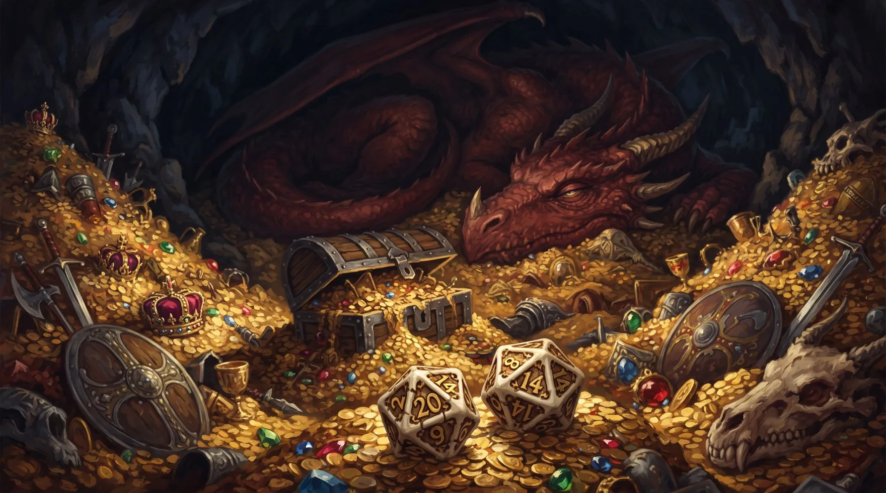
Chapter 7D20 Random Tables
Sometimes the most memorable items in a campaign are the ones nobody planned for. The following tables let you generate unique magic items on the fly using a d20 — from the base weapon to its enchantment, appearance, quirks, history, and potential curses.
Random Weapon Generator
Roll once on the Base Weapon Type table and once on the Enchantment Type table, then add a quirk, an origin, and, if you're feeling cruel, a curse.
Base Weapon Type (d20)
| d20 | Weapon | Damage | Properties |
|---|---|---|---|
| 1 | Dagger | 1d4 piercing | Finesse, light, thrown (20/60) |
| 2 | Shortsword | 1d6 piercing | Finesse, light |
| 3 | Longsword | 1d8 slashing | Versatile (1d10) |
| 4 | Greatsword | 2d6 slashing | Heavy, two-handed |
| 5 | Rapier | 1d8 piercing | Finesse |
| 6 | Battleaxe | 1d8 slashing | Versatile (1d10) |
| d20 | Weapon | Damage | Properties |
|---|---|---|---|
| 7 | Greataxe | 1d12 slashing | Heavy, two-handed |
| 8 | Warhammer | 1d8 bludgeoning | Versatile (1d10) |
| 9 | Maul | 2d6 bludgeoning | Heavy, two-handed |
| 10 | Morningstar | 1d8 piercing | — |
| 11 | Flail | 1d8 bludgeoning | — |
| 12 | Halberd | 1d10 slashing | Heavy, reach, two-handed |
| 13 | Glaive | 1d10 slashing | Heavy, reach, two-handed |
| 14 | Trident | 1d6 piercing | Thrown (20/60), versatile (1d8) |
| 15 | Scimitar | 1d6 slashing | Finesse, light |
| 16 | Spear | 1d6 piercing | Thrown (20/60), versatile (1d8) |
| 17 | Longbow | 1d8 piercing | Ammunition (150/600), heavy, two-handed |
| 18 | Hand Crossbow | 1d6 piercing | Ammunition (30/120), light, loading |
| 19 | Quarterstaff | 1d6 bludgeoning | Versatile (1d8) |
| 20 | Whip | 1d4 slashing | Finesse, reach |
Enchantment Type (d20)
| d20 | Enchantment | Effect |
|---|---|---|
| 1 | Flamebound | Extra 1d6 fire damage on a hit |
| 2 | Frostforged | Extra 1d6 cold damage; the target must succeed on a DC 13 Constitution saving throw or have its speed reduced by 10 feet until your next turn |
| 3 | Thunderstrike | Extra 1d6 thunder damage; a critical hit pushes the target up to 10 feet away |
| 4 | Venom-Touched | Extra 1d6 poison damage; the target must succeed on a DC 13 Constitution saving throw or be poisoned until the end of your next turn |
| 5 | Radiant Edge | Extra 1d6 radiant damage against fiends and undead |
| 6 | Shadow-Wreathed | Extra 1d6 necrotic damage; advantage on Dexterity (Stealth) checks in dim light or darkness |
| 7 | Arcane Conduit | Can be used as a spellcasting focus; +1 bonus to spell attack rolls |
| 8 | Vampiric | On a critical hit, you regain hit points equal to half the damage dealt |
| 9 | Phase-Touched | Attack through a wall or cover up to 5 feet thick; can't do so again until you finish a short or long rest |
| 10 | Gravitational | Can't be disarmed; returns to your hand immediately when thrown |
| 11 | Warding | +1 bonus to AC; cast shield from it, then not again until the next dawn |
| 12 | Soulbound | As a bonus action, you can summon it to your hand from up to 60 feet away |
| 13 | Storm-Calling | Extra 1d8 lightning damage; cast call lightning from it, then not again until the next dawn |
| 14 | Chrono-Touched | Reroll an attack roll and use the new roll; can't do so again until you finish a long rest |
| 15 | Fey-Kissed | Extra 1d6 psychic damage; the wielder has darkvision out to 60 feet |
| 16 | Titan-Forged | Counts as one size larger for damage purposes |
| 17 | Echo-Blade | On a hit, make one additional attack as a bonus action; can't do so again until you finish a short or long rest |
| 18 | Nullifying | Dispels active magic on the target; on a hit, the target must succeed on a DC 13 Constitution saving throw or lose concentration |
| 19 | Bloodthirsty | After you take damage, +2 bonus to attack rolls until the end of your next turn |
| 20 | Awakened | Item is sentient! Roll on the Sentient Item tables in Chapter 5 |
Item Quirks & History
A single quirk or a line of history can make even a common item memorable. Roll once on each table, or pick the entries that fit.
Minor Magical Quirks (d20)
| d20 | Quirk |
|---|---|
| 1 | The item hums faintly when within 120 feet of a specific creature type (dragons, undead, fey, etc.) |
| 2 | Flowers bloom within 10 feet of the item when it's drawn or worn |
| 3 | The wielder's eyes change color while attuned (gold, silver, red, etc.) |
| 4 | The item weighs nothing — it feels as though it isn't there |
| 5 | The item is uncomfortably warm to the touch, always, as though sitting near a hearth |
| 6 | Small illusory motes of light drift from the item when used in combat |
| 7 | The item smells faintly of a specific substance: old books, lavender, brimstone, the sea |
| 8 | The item casts no shadow |
| 9 | Inscriptions on the item change languages each dawn |
| 10 | The item produces an audible tone when it strikes — like a tuning fork or a bell |
| 11 | Attuned creature has vivid, prophetic dreams about events from the item's past |
| 12 | The item leaves faintly glowing marks on surfaces it touches |
| 13 | Animals are uneasy around the item; horses shy, dogs growl |
| 14 | Rain never falls on the item or its wielder |
| 15 | The item occasionally whispers a single word in an unknown language |
| 16 | The wielder's hair grows noticeably faster while attuned |
| 17 | The item is always perfectly clean — blood, mud, and grime slide off |
| 18 | When the item deals a killing blow, the target briefly appears as a spectral echo |
| 19 | The item subtly changes its physical appearance over time — new engravings appear |
| 20 | When unsheathed or activated, nearby flames flicker and dim for a heartbeat |
Item Origin / History (d20)
| d20 | Origin |
|---|---|
| 1 | Forged by a dwarven king to defend his people against a great dragon |
| 2 | Created by a lich as a trap — designed to corrupt its wielder over time |
Item Origin / History (continued)
| d20 | Origin |
|---|---|
| 3 | A gift from a celestial being to a champion who has long since died |
| 4 | Pulled from the corpse of a demon prince by a legendary adventurer |
| 5 | Grown from a seed planted in the Feywild during a rare eclipse |
| 6 | Found in the treasure hoard of an ancient dragon, origin unknown |
| 7 | Fashioned from meteor iron that fell during a prophesied celestial event |
| 8 | Created by a mad artificer who poured their own life force into the item |
| 9 | A relic of a fallen empire, the last remnant of a once-mighty civilization |
| 10 | Forged in the fires of Mount Celestia by a solar working on divine command |
| 11 | Stolen from a god's personal armory — the deity still wants it back |
| 12 | Created by elven bladesmiths over the course of a century-long ritual |
| 13 | The item is a transformed creature, polymorphed permanently into this form |
| 14 | Assembled from fragments found across three different planes of existence |
| 15 | Blessed by a dying cleric with their last breath and final prayer |
| 16 | An accidental creation — the byproduct of a failed teleportation circle |
| 17 | Part of a matched set of items, each held by a different legendary hero |
| 18 | The weapon of a long-dead god, fallen to the Material Plane during the Dawn War |
| 19 | Commissioned by a merchant prince as a status symbol — its power was unintended |
| 20 | Nobody knows. The item simply appeared one day, as if it had always been there |
Curses
Item Curses (d20)
| d20 | Curse | Effect |
|---|---|---|
| 1 | Possessive | Can't be voluntarily discarded, and attunement can't be ended willingly |
| 2 | Jealous | Other magic items within 5 ft. have their properties suppressed |
| 3 | Blood Price | Each use deals 1d4 necrotic damage to the wielder |
| 4 | Alignment Shift | Each week of attunement shifts the wielder's alignment one step toward the item's |
| d20 | Curse | Effect |
|---|---|---|
| 5 | Addiction | Each dawn, the wielder must succeed on a DC 12 Wisdom saving throw or have disadvantage on attack rolls with other weapons until the next dawn |
| 6 | Paranoia | The wielder believes allies are plotting against it; disadvantage on Wisdom (Insight) checks |
| 7 | Fragile Mind | After each long rest, the wielder must succeed on a DC 10 Wisdom saving throw or gain 1 level of exhaustion |
| 8 | Beacon | Sheds bright light in a 30-foot radius and dim light for an additional 30 feet; the light can't be extinguished |
| 9 | Hunger | Wielder must eat double rations or gain no benefit from rests |
| 10 | Nightmares | No benefit from a long rest unless the wielder succeeds on a DC 13 Wisdom saving throw |
| 11 | Recoil | When the wielder rolls a 1 on an attack roll with it, the wielder takes the weapon's damage |
| 12 | Time Debt | Wielder ages 1 year for every week of attunement |
| 13 | Phantom Pain | The wielder feels healed wounds as if they were fresh; disadvantage on Constitution saving throws |
| 14 | Cowardice | Below half its hit point maximum, the wielder must succeed on a DC 14 Wisdom saving throw at the start of each turn or Disengage and flee |
| 15 | Whispers | Constant murmuring; disadvantage on Wisdom (Perception) checks that rely on hearing |
| 16 | Magnetic | Metal objects within 10 feet drift toward the wielder; disadvantage on Dexterity (Stealth) checks near metal |
| 17 | Hollowing | One ability score of the DM's choice decreases by 1 for each month of attunement |
| 18 | Necrotic Aura | Plants wilt and small animals die within 10 feet; NPCs grow uneasy |
| 19 | Memory Drain | After 30 days, wielder loses one meaningful memory (DM's choice) |
| 20 | Sentient Malice | Secretly sentient and evil; it pretends to be an ordinary item while subtly manipulating events |
Breaking a Curse
A remove curse spell doesn't rid an item of its curse, but it ends the wielder's attunement so the item can be removed or discarded. Deeper curses may call for a quest instead.
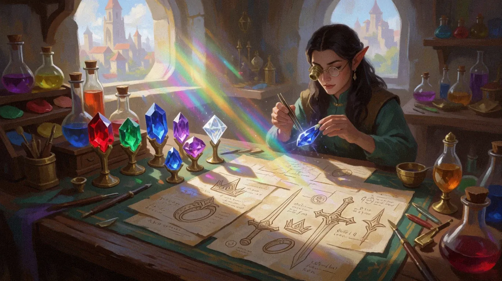
Chapter 8Design & Aesthetics
A magic item's visual design is as important as its mechanical properties. The way an item looks, feels, sounds, and even smells contributes to its presence in the narrative. This chapter provides DMs and players with tools and tables for designing visually distinctive and memorable magic items.
"The finest items are not the loudest. A true masterwork whispers its power — in the balance of the blade, the warmth of the leather, the way light bends just slightly around its edge. Only the crude enchanter decorates with blinding light. The master lets the work speak."
— Elminster Aumar
Visual Style by Rarity
As items increase in rarity, their visual signature becomes more dramatic. A common magic item might look nearly identical to its mundane counterpart with only a subtle tell — a faint shimmer, an unusual heft. A legendary item, on the other hand, should be unmistakable: a weapon that hums with visible power, armor that seems to drink in light, a staff crowned with a gem that pulses like a heartbeat.
Visual Design Guide by Rarity
| Rarity | Visual Presence | Design Cues |
|---|---|---|
| Common | Subtle, easy to overlook | Slight warmth, faint rune, unusual weight, minor color tint |
| Uncommon | Noticeable up close | Visible runes, unusual material blend, faint glow, etched motifs |
| Rare | Clearly magical | Active glow, audible hum, moving patterns, gem inlays, elemental effects |
| Very rare | Dramatic and awe-inspiring | Floating components, shifting colors, visible aura, ambient effects in radius |
| Legendary | Unmistakable, iconic | Reality-bending visual effects, sentient glow, environmental impact, audible presence |
| Artifact | Overwhelming, alien | Warps perception, distorts light/sound, physically painful to behold for the unworthy |
Colors, Gems & Magical Resonance
Color is the fastest way to tell players what an item does before they ever read its properties. A ruby pommel promises fire; a cold blue sapphire hints at frost or quiet authority. The Gem and Color Associations table pairs common gems with the damage types and moods they evoke.
Common Spells on Items
Frequently Enchanted Spells
| Spell | Level | Typical Item | Charges / Use |
|---|---|---|---|
| Shield | 1st | Shield, bracers, ring | 3–5 charges |
| Fireball | 3rd | Wand, staff, necklace | 7 charges (upcast variant) |
| Fly | 3rd | Boots, cloak, broom | At will or 1/day |
| Invisibility | 2nd | Ring, cloak, hat | At will or 3 charges |
| Detect magic | 1st | Lens, monocle, gem | At will |
| Teleport | 7th | Helm, amulet, portal key | 1/day or 3 charges |
| Haste | 3rd | Boots, weapon, belt | 1/day |
| Counterspell | 3rd | Ring, staff, amulet | 3–7 charges |
| Wish | 9th | Ring, luck blade, artifact | 1–3 total uses (destroyed after) |
| Misty step | 2nd | Boots, cloak, ring | 1/day |
| Dispel magic | 3rd | Rod, staff, amulet | 3–5 charges |
| Cure wounds | 1st | Amulet, staff, wand | 1–3 charges |
Sensory Signatures (d8)
| d8 | Signature |
|---|---|
| 1 | Sound. A faint chime, hum, or heartbeat when the item is drawn or used |
| 2 | Smell. Ozone, cedar smoke, old parchment, or sea salt lingers around it |
| 3 | Touch. Always cool, always warm, or faintly vibrating in the hand |
| 4 | Light. Runes or gems kindle with dim light near a particular kind of creature |
| 5 | Weight. Heavier or lighter than it should be, or weightless when its bearer is in danger |
| 6 | Shadow. Its shadow moves a moment late or falls the wrong way |
| 7 | Taste. A metallic or honeyed taste fills the mouth of anyone who attunes to it |
| 8 | Echo. Whispers, battle cries, or distant music sound faintly when it is used |
Describing Magic Items
When the characters find an item, describe it in three beats: what it looks like at a glance, what a character notices on closer inspection, and what happens when someone touches or uses it. Save the item's name for last, or let the players learn it through lore, an inscription, or the item itself. A plain longsword that hums near the undead is more memorable than a +1 longsword, and the description gives players a reason to ask questions. Keep a few unexplained details in reserve; they make good hooks for an identify spell or a visit to a sage. Players remember the item that smelled of cedar smoke long after they forget its bonus.
Gem & Color Associations
| Color/Gem | Damage Type | Emotional Resonance | Common Usage |
|---|---|---|---|
| Ruby / Crimson | Fire | Rage, passion, courage | Flame weapons, berserker items |
| Sapphire / Azure | Cold / Force | Wisdom, calm, authority | Frost weapons, divination items |
| Emerald / Verdant | Poison / Acid | Growth, envy, nature | Druidic items, serpent weapons |
| Amethyst / Violet | Psychic / Necrotic | Mystery, madness, ambition | Mind-affecting items, warlock pacts |
| Topaz / Gold | Radiant | Justice, divinity, glory | Paladin weapons, holy items |
| Onyx / Obsidian | Necrotic | Death, void, entropy | Necromantic items, cursed objects |
| Diamond / Prismatic | Force / Radiant | Perfection, clarity, power | Artifacts, items of pure magic |
| Amber / Warm Gold | Lightning / Thunder | Energy, chaos, vitality | Storm weapons, tempest items |
Appendix A: Items by Rarity
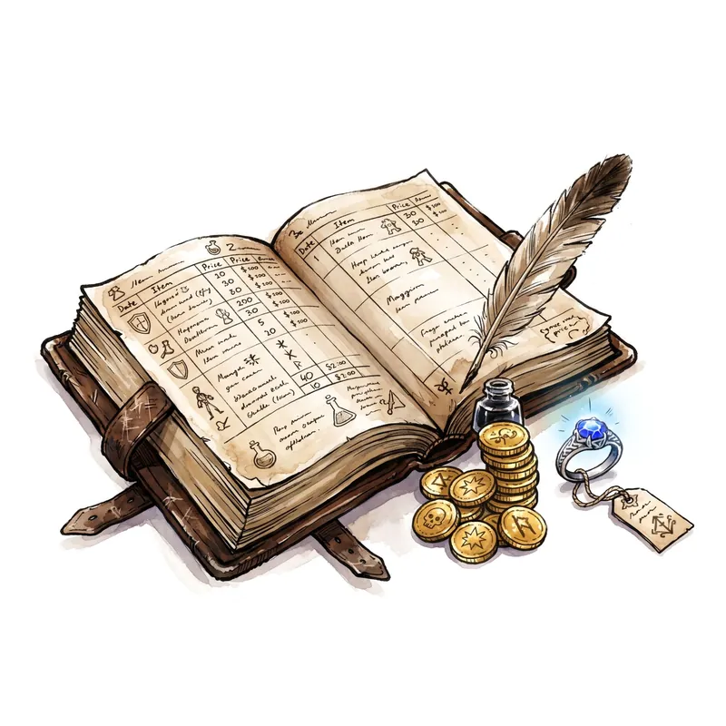
Common Items
Potion of Healing, Potion of Climbing, Driftglobe, Cloak of Many Fashions, Candle of the Deep, Charlatan's Die, Clockwork Amulet, Ear Horn of Hearing, Enduring Spellbook, Ersatz Eye, Heward's Handy Spice Pouch, Moon-Touched Sword, Mystery Key, Orb of Direction, Pole of Collapsing, Rope of Mending, Talking Doll, Tankard of Sobriety, Wand of Pyrotechnics, Wand of Smiles.
Uncommon Items
+1 Weapon, +1 Shield, +1 Armor, Bag of Holding, Boots of Elvenkind, Bracers of Archery, Brooch of Shielding, Cloak of Elvenkind, Cloak of Protection, Decanter of Endless Water, Eversmoking Bottle, Gauntlets of Ogre Power, Goggles of Night, Hat of Disguise, Headband of Intellect, Immovable Rod, Javelin of Lightning, Lantern of Revealing, Mithral Armor, Adamantine Armor, Pearl of Power, Periapt of Wound Closure, Ring of Jumping, Sending Stones, Stone of Good Luck, Wand of Magic Missiles, Wand of the War Mage (+1), Winged Boots.
Rare Items
+2 Weapon, +2 Shield, Amulet of Health, Belt of Dwarvenkind, Belt of Giant Strength (Hill), Boots of Speed, Cape of the Mountebank, Cloak of Displacement, Cube of Force, Flame Tongue, Helm of Teleportation, Mantle of Spell Resistance, Necklace of Fireballs, Ring of Evasion, Ring of Protection, Ring of Spell Storing, Rope of Entanglement, Staff of Healing, Staff of the Woodlands, Sun Blade, Sword of Wounding, Wand of Fireballs, Wand of Lightning Bolts.
Very Rare Items
+3 Weapon, +3 Shield, Amulet of the Planes, Animated Shield, Belt of Giant Strength (Fire, Frost, Stone), Candle of Invocation, Carpet of Flying, Crystal Ball, Dancing Sword, Dragon Scale Mail, Dwarven Plate, Dwarven Thrower, Efreeti Bottle, Figurine of Wondrous Power (Obsidian Steed), Manual of Bodily Health, Oathbow, Ring of Regeneration, Robe of Stars, Rod of Absorption, Staff of Fire, Staff of Frost, Staff of Power, Sword of Sharpness, Tome of Clear Thought.
Legendary Items
Apparatus of the Crab, Armor of Invulnerability, Belt of Giant Strength (Cloud, Storm), Blackrazor, Crystal Ball of True Seeing, Cubic Gate, Deck of Many Things, Defender, Efreeti Chain, Hammer of Thunderbolts, Holy Avenger, Horn of Valhalla (Iron), Iron Flask, Luck Blade, Moonblade, Plate Armor of Etherealness, Ring of Djinni Summoning, Ring of Elemental Command, Ring of Invisibility, Ring of Spell Turning, Ring of Three Wishes, Robe of the Archmagi, Rod of Lordly Might, Scarab of Protection, Sphere of Annihilation, Staff of the Magi, Talisman of Pure Good, Talisman of Ultimate Evil, Vorpal Sword, Wave, Whelm.
Artifacts
Axe of the Dwarvish Lords, Book of Exalted Deeds, Book of Vile Darkness, Eye of Vecna, Hand of Vecna, Orb of Dragonkind, Sword of Kas, Wand of Orcus, Rod of Seven Parts, Codex of the Infinite Planes, Machine of Lum the Mad, Mighty Servant of Leuk-O, Invulnerable Coat of Arn, Mace of Cuthbert, Crown of Karsus.
Using These Lists
These lists are a sampling drawn from the core rules and other sources, sorted by rarity to help you set the stakes of a treasure hoard. Items from beyond the core rules, including many of the common items and several of the artifacts, may not suit every campaign; treat them as suggestions. The Crown of Karsus is original to this book.
Appendix B: Quick Reference
Attunement Quick Reference
| Rule | Detail |
|---|---|
| Max Attuned Items | 3 at a time per creature |
| Time to Attune | Short rest (1 hour) focused on the item |
| End Attunement | Short rest, death, 100+ ft. separation for 24 hrs, or voluntarily |
| Curse Override | Cursed items can't have attunement ended without remove curse |
Damage Type Reference
| Type | Common Source | Typical Resistance, Immunity, or Vulnerability |
|---|---|---|
| Slashing | Swords, axes | Oozes, some constructs |
| Piercing | Arrows, rapiers | Creatures resistant to nonmagical weapons (lycanthropes, many fiends) |
| Bludgeoning | Maces, hammers | Skeletons are vulnerable to it |
| Fire | Flame Tongue, fireball | Demons, fire elementals, red dragons |
| Cold | Frost Brand, ice storm | White dragons, ice elementals |
| Lightning | Javelin of Lightning | Blue dragons, shambling mounds |
| Thunder | Hammer of Thunderbolts | Few natural resistances |
| Poison | Venom-coated weapons | Undead (immune), many fiends |
| Acid | Acid splash items | Black dragons, oozes |
| Necrotic | Shadow items, inflict wounds | Undead (often immune) |
| Radiant | Holy Avenger, Sun Blade | Very few (some celestials) |
| Force | Staff of the Magi | Almost nothing resists force |
| Psychic | Mind-affecting items | Mindless creatures (immune) |
Crafting Time Quick Chart
| Rarity | Solo Crafter | 2 Crafters | 3+ Crafters |
|---|---|---|---|
| Common | 1 workweek | 3 days | 2 days |
| Uncommon | 2 workweeks | 1 workweek | 4 days |
| Rare | 10 workweeks | 5 workweeks | 4 workweeks |
| Very rare | 25 workweeks | 13 workweeks | 9 workweeks |
| Legendary | 50 workweeks | 25 workweeks | 17 workweeks |
Gauging Power
The three legendary items of Chapter 2 sit at very different points on the scale. The vorpal sword is almost purely offensive: a natural 20 can end a fight outright, but the sword does little to protect its wielder or to solve problems outside combat. Blackrazor is nearly as deadly and adds real staying power through its stolen hit points, its immunity to being charmed or frightened, and its free haste. The staff of the magi is the most versatile of all, formidable in offense, defense, and utility alike. Ranked overall, the staff of the magi comes first, Blackrazor a close second, and the vorpal sword third.
Crown of Karsus at a Glance
| Property | Frequency | Cost or Risk |
|---|---|---|
| Netherese Resonance | Always (passive) | Gods can sense it in their domains |
| Weave Dominance | Once per day | Mortality DC permanently +5 per use |
| Echo of the Avatar | Once in all existence | DC 35 check; failure is instant death; the crown crumbles |
| Curse | On attunement | Removal by death deals maximum Mortality damage |
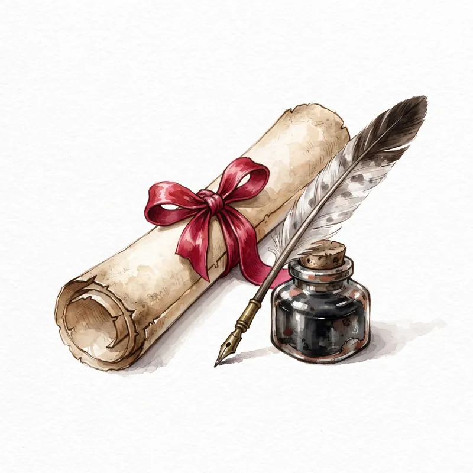
"May your blade stay sharp, your armor hold true,
and may the items you forge tell stories
long after you've left the table."
Fonts and textures from Homebrewery (naturalcrit, MIT license). Includes material from the System Reference Document 5.1 by Wizards of the Coast LLC, licensed under CC-BY-4.0. Unofficial fan content, not affiliated with or endorsed by Wizards of the Coast.